Part 2 · The language-model era (2017 → October 2026)
COMP 150-003 · Fall 2026 · Prof. Allan Miller
Recap, and today's big idea
Part 1: a model is a function learned from examples, tested on data it hasn't seen.
Today: the examples are trillions of words, and the prediction is the next word.
Your phone's autocomplete guesses your next word. ChatGPT, Claude and Gemini are that same idea, scaled up about a billion times.
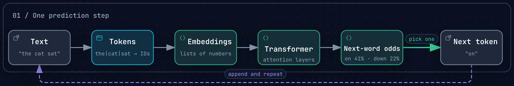
Today's roadmap: every box on this picture
Step 1: text becomes numbers
Tokens
Computers only handle numbers (Module 1!). So text is chopped into tokens: whole words, pieces of words, or punctuation.
Each token gets an ID number, just like ASCII gives each character a number.
Rule of thumb: 1 token ≈ ¾ of an English word (100 tokens ≈ 75 words).
Other languages often need more tokens for the same sentence: up to 15× more. Since you pay per token, that costs more.
The cat sat on the unbelievable mat.
Try it: an online tokenizer playground shows exactly how a model splits your sentence.
OpenAI Help Center (accessed Oct 2026); Petrov et al., NeurIPS 2023 · token split shown is illustrative
Context window: how much it can "see"
A model reads a limited number of tokens at once: its context window.
2024: about 8,000 tokens was common (Llama 3). 2026: about 1 million is common, roughly 750,000 words or several novels.
But longer isn't always better: tests across 18 models found performance drops as inputs get longer ("context rot").
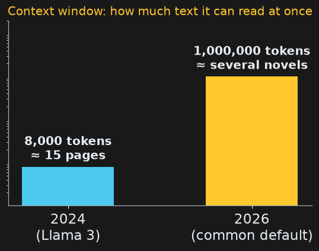
Meta (Llama 3, 2024); DeepSeek-V4 (2026); Chroma research (Jul 2025)
Step 2: predict the next word
A tiny language model
Count, for every word, which word comes next and how often. That table is a (very small) language model.
This is exactly the A4 tally pattern, nested one level deeper.
text = "the cat sat on the mat . the cat ate the fish . the dog sat on the log ."
words = text.split()
next_words = {}
for i in range(len(words) - 1):
w, n = words[i], words[i + 1]
if w not in next_words:
next_words[w] = {}
next_words[w][n] = next_words[w].get(n, 0) + 1
print(next_words["the"])
print(next_words["sat"])
A language model is just a table of what comes next, and how often.
The same model, drawn as a map
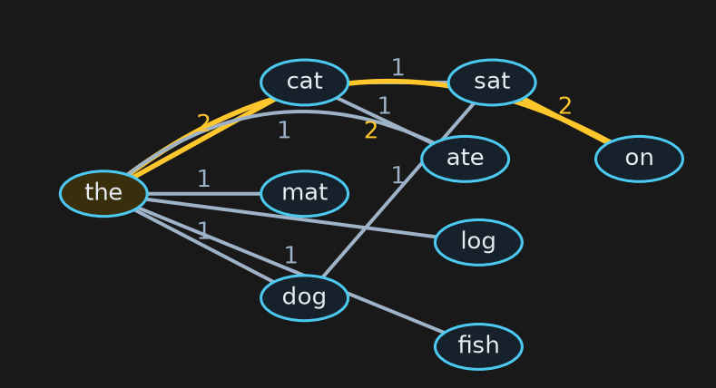
Each arrow means "comes next"; the number is how often. Thick gold arrows happened twice. To generate text, start at the and follow arrows.
Exercise 3
Exercise 3
Using the same text:
the cat sat on the mat . the cat ate the fish . the dog sat on the log .
Fill in the counts for the words that follow cat and on.
Start from the. Repeatedly pick the most common next word (break ties alphabetically). Write the first 6 words.
What do you notice about the sentence you generated?
⏱ 5 minutes
Exercise 3: solution
word
followed by (count)
the
cat 2 · mat 1 · fish 1 · dog 1 · log 1
cat
sat 1 · ate 1 (a tie)
on
the 2
step
current word
most common next
why
1
the
cat
count 2 beats the 1s
2
cat
ate
tie 1–1: "ate" is first alphabetically
3
ate
the
only option
4
the
cat
same as step 1
5
cat
ate
same as step 2
the cat ate the cat ate …
Always picking the single most likely word gets stuck in a loop. Real models add some randomness, which is the next slide.
Randomness: why you get different answers
Instead of always taking the top word, pick randomly, weighted by the counts: "cat" twice as likely as "mat".
Temperature is the dial: low = safe and repetitive, high = surprising and weird.
import random
w = "the"
sentence = [w]
while w != "." and len(sentence) < 8:
options = next_words[w]
w = random.choices(list(options), weights=list(options.values()))[0]
sentence.append(w)
print(" ".join(sentence))
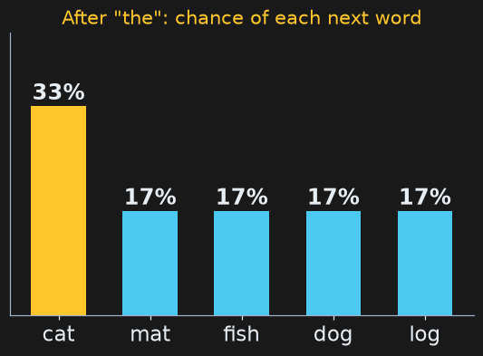
Run it a few times: "the fish ." · "the cat sat on the dog sat" · … Even at temperature 0, one 2025 study found 1,000 identical requests to a real model produced 80 different answers.
Thinking Machines Lab (Sep 2025)
From counting to transformers
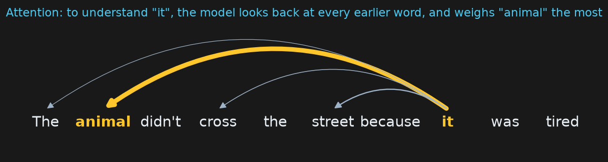
Our tiny model
Looks at one previous word. Knows only what's in 3 sentences. A table of counts.
A real LLM
Looks at all previous tokens at once ("attention", 2017). Trained on 15–30+ trillion tokens. Billions of learned numbers ("parameters") instead of a count table.
Reading GPT-3's training data non-stop would take a person 2,600+ years. Same job as our table: predict the next token.
Vaswani et al. 2017; Meta (Llama 3); DeepSeek-V4 (2026); Ars Technica (Jul 2023); 3Blue1Brown (Nov 2024)
Inside an LLM, one token at a time
Each token becomes an embedding: a long list of numbers (in GPT-3, 12,288 per token).
Many transformer layers mix the tokens together using attention.
The output is a probability for every possible next token. Pick one, add it to the text, and run again.
Ars Technica (Jul 2023); 3Blue1Brown (Nov 2024) · probabilities shown are illustrative
How a chatbot is made
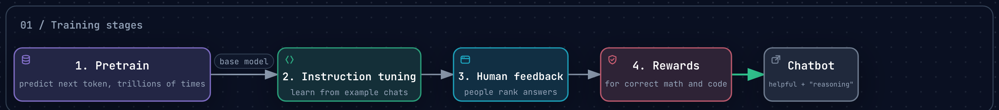
Pretraining builds a "base model" that can continue any text; the later stages turn it into a helpful assistant.
Stage 4 is where today's reasoning models come from: reward answers that can be checked.
A small 1.3B model trained with human feedback beat the 175B GPT-3 in people's preference tests (2022). Rewarding only right/wrong took DeepSeek-R1-Zero from 15.6% to 77.9% on a math-olympiad exam (2025).
An LLM predicts plausible text, not true text. When it doesn't know, it can still produce a confident answer.
OpenAI (2025): a model that said "I don't know" 52% of the time made 26% errors; one that almost never abstained made 75% errors. Tests that reward guessing encourage guessing.
Real consequences: lawyers have been sanctioned by courts for filing AI-invented case citations.
Never ask a model which model it is. Check the app or the API response instead.
💬 How do you check an AI's answer when you don't already know it?
A real agent is the same loop, except the next action comes from the LLM reading the results so far, not a fixed script.
How long can an agent work on its own?
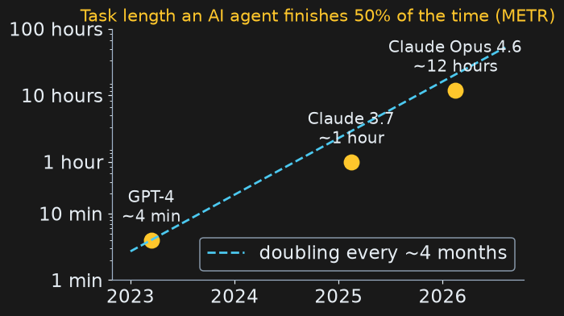
METR measures the length of task (in skilled-human time) an agent completes 50% of the time:
GPT-4 (Mar 2023): about 4 minutes
Claude 3.7 Sonnet (Feb 2025): about 1 hour
Claude Opus 4.6 (Feb 2026): about 12 hours
It has doubled about every 4 months since 2023.
Reliability is lower: the same 12-hour model succeeds at 80% only on tasks of about 1 hour.
💬 If the doubling continued, how long a task by the end of 2027? Should we expect it to continue?
METR time-horizon measurements (2025–2026); METR notes results above ~16 h are unreliable
Coding agents
"Vibe coding" (Karpathy, Feb 2025): describe what you want and let the AI write the code.
Feb 2026: OpenAI said GPT-5.3-Codex was "instrumental in creating itself."
Feb 2026: 16 Claude agents wrote a 100,000-line C compiler that boots Linux, for about $20,000 (Anthropic's own report).
But: in a 2025 study, experienced developers using AI were 19% slower, yet believed they were 20% faster.
And: an agent on Replit deleted a production database despite a code freeze, then wrongly said it couldn't be restored (Jul 2025).
💬 What is still worth learning to code by hand? (You've been doing both all semester.)
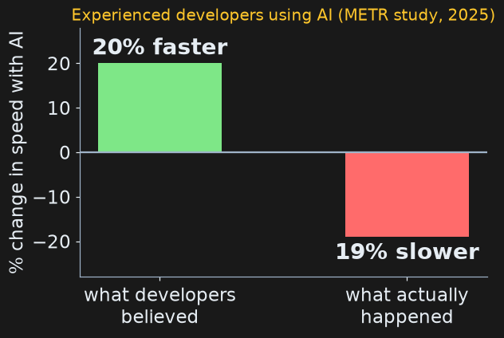
NBC (Feb 5, 2026); Anthropic (Feb 2026); METR RCT (Jul 10, 2025); The Register (Jul 21, 2025)
Open vs. closed models
Closed (hosted)
GPT-6, Claude 5.5, Gemini. You use them through an app or API; the company keeps the weights.
Open-weight
Weights are downloadable: DeepSeek, Qwen, Kimi K3 (2.8 trillion parameters; announced Jul 2026), Google's Gemma 4 (small enough for a laptop).
Trade-offs: cost, privacy (runs on your machine), control, and safety (anyone can modify it).
The biggest open-weight models of 2026 came from Chinese labs.
An Nvidia H100: the chip most of these models were trained on
Lab announcements 2026; release timelines (dossier 03) · Photo: 极客湾Geekerwan, CC BY 3.0, Wikimedia Commons
What AI does now
Beyond text
See, hear, speak
Models take images, audio and video as input and talk back in real time.
Create
Images, music and video from a sentence. Oct 27, 2026: Genie 4 generates interactive worlds (trusted testers only).
Act
Agents use computers: browsing, filling in forms, writing and running code.
Move
Humanoid robots at about 16 confirmed work sites in 2026, mostly car and electronics plants and warehouses, doing narrow tasks.
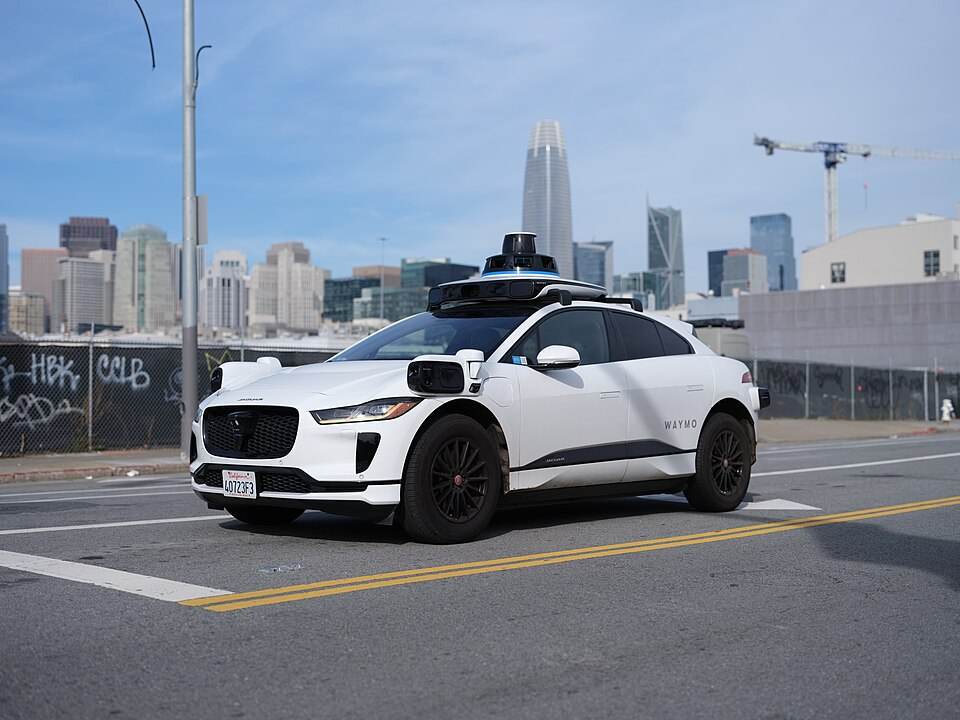
A Waymo driverless taxi in San Francisco
Google DeepMind (Oct 27, 2026); humanoid deployment trackers (2026, secondary) · Photo: Dllu, CC BY 4.0, Wikimedia Commons
AI in science and medicine
AlphaFold: predicted structures for 200M+ proteins; Nobel Prize 2024. Open rival ESMFold2 (2026) maps about 1 billion.
Protein design from plain English (Nature, Oct 21, 2026).
Weather: AI forecast models went from papers (2023) to operational use at Europe's weather center (2025).
Drugs: AI-designed drugs are in late-stage trials (Insilico calls rentosertib the first Phase III of a generative-AI-driven drug, Sep 2026). None is approved yet.
But: in a 1,298-person trial, people using a chatbot identified medical conditions less accurately than people using their usual methods.
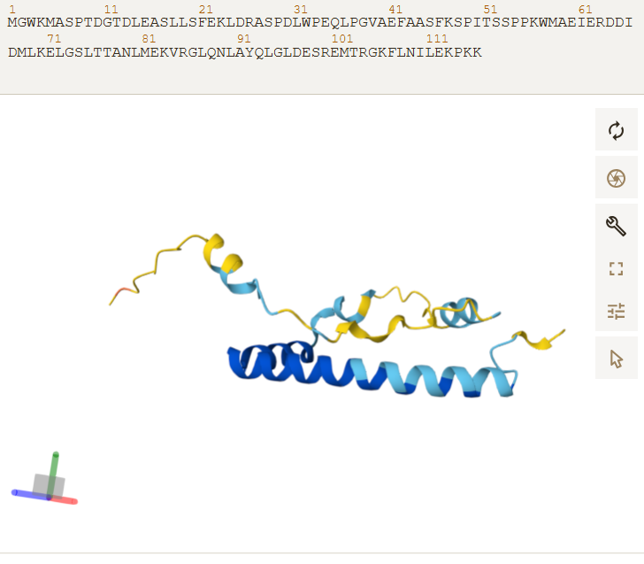
A protein structure predicted by AlphaFold
DeepMind; Nature (May 27 & Oct 21, 2026); ECMWF; Insilico (Sep 10, 2026); Nature Medicine (2025) · Photo: SharnKB, CC BY 4.0, Wikimedia Commons
How many people use it?
1.2 billion
ChatGPT weekly users, Sep 29, 2026 (900 million in Feb; 1 million in its first 5 days in 2022).
More than 70% of ChatGPT messages are not work-related (2025 study).
57% of U.S. college students use AI for coursework at least weekly; 53% say their school discourages or prohibits it.
Loyola's default rule: no AI on graded work unless your instructor authorizes it (this course authorizes it, with disclosure).
Made 12 years ago, before ChatGPT, before self-driving taxis, before AlphaGo.
Its argument: "horses" lost their jobs to engines; could people lose theirs to bots?
While you watch, write down three specific predictions it makes.
We'll compare them to 2026 evidence next. (You'll also write about this in Assignment 6.)
youtube.com/watch?v=7Pq-S557XQU · Wikipedia: Humans Need Not Apply
The video vs. 2026
self-driving: now real
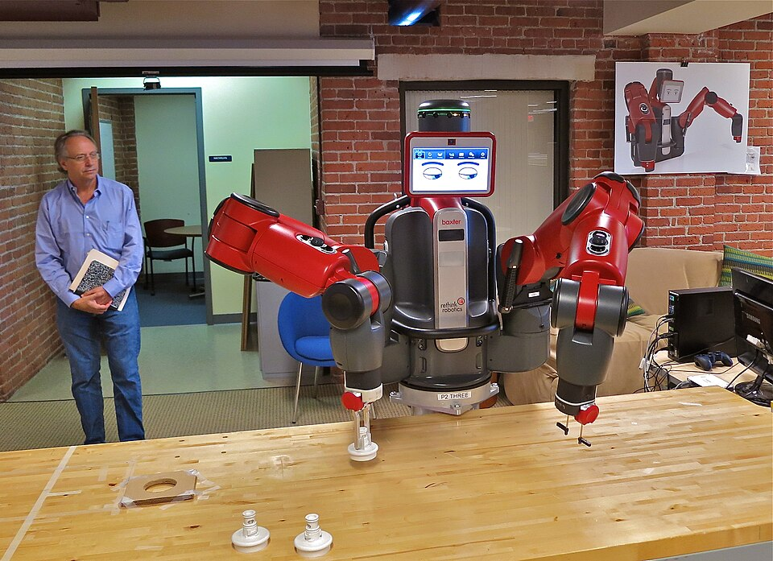
Baxter (2012–2018)
the 2014 video said…
what 2026 shows
Self-driving cars are coming
Waymo runs driverless taxis in several U.S. metros: 270 million driverless miles through June 2026
Baxter, a general-purpose robot, will replace workers
Baxter was discontinued in 2018; about 5 million task-specific industrial robots now work worldwide
Bots for lawyers, doctors and creative work
AI drafts legal briefs, reads scans, writes and makes art; also sanctioned lawyers and mixed medical results
Massive unemployment (≈45% of jobs automatable)
U.S. unemployment 4.2% (Sep 2026); no economy-wide collapse so far
Waymo ride counts change fast; check the latest before class.
Waymo (Sep 24, 2026); Wired (2018); IFR (Sep 24, 2026); BLS (Oct 2, 2026) · Photo: Dllu, CC BY 4.0, Wikimedia Commons · Photo: Steve Jurvetson from Los Altos, USA, CC BY 2.0, Wikimedia Commons
Jobs: what the evidence says now
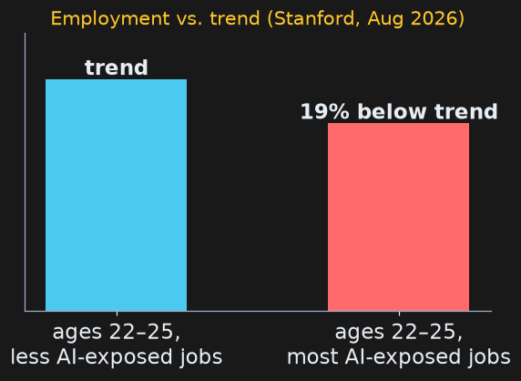
Signs of change
Ages 22–25 in AI-exposed jobs: employment 19% below trend, mostly through less hiring (Stanford, Aug 2026). AI was the #1 stated reason for announced U.S. job cuts in Jan–Sep 2026 (~21%).
Signs of stability
No economy-wide displacement (same Stanford study). Denmark: chatbots had no detectable effect on earnings or hours. Unemployment steady at 4.1–4.3%.
Productivity
Customer-support workers with AI resolved 14% more issues per hour (34% for beginners). Experienced developers were 19% slower in one study.
💬 The video is 12 years old. Which predictions does the evidence support, which not yet, and what did it not foresee?
Stanford Digital Economy Lab (Aug 12, 2026); Challenger (Oct 1, 2026); NBER w33777; QJE 2025; METR (2025)
Law and copyright
Training data: Anthropic agreed to pay authors $1.5 billion (about $3,000 per book) over pirated books used in training; approved Jul 20, 2026.
Sep 29, 2026: the first U.S. appeals court to rule on AI training (Thomson Reuters v. Ross) said copying Westlaw headnotes was not fair use.
EU AI Act: enforcement began Aug 2026; rules for "high-risk" uses (hiring, schools, credit) were delayed to Dec 2027.
U.S.: no comprehensive federal AI law; states are writing their own, and the federal government is challenging some.
💬 Should AI companies pay for the books, art and code they learn from?
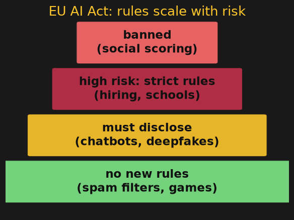
AP (Jul 21, 2026); 3rd Cir. opinion (Sep 29, 2026); EU Digital Omnibus (Reg. 2026/1744); EO 14365 (Dec 11, 2025)
Illinois: right here
Aug 2025 no AI therapy chatbots
Jan 1, 2026 no discriminatory AI in hiring
Jan 1, 2026 AI can't be a college's sole instructor
Jul 6, 2026 first state to require frontier-AI safety audits
Since Aug 2025: an AI chatbot may not provide therapy in Illinois (fines up to $10,000 per violation).
Since Jan 1, 2026: employers may not use AI that has a discriminatory effect in hiring or firing.
Since Jan 1, 2026: Illinois community colleges may not use AI as the sole instructor of a course.
Jul 6, 2026: Illinois became the first state to require independent safety audits of frontier AI; serious safety incidents must be reported within 72 hours.
IDFPR; IL HB 3773; P.A. 104-0201; Governor's office and Chicago Sun-Times (Jul 2026)
Safety and misuse
Deepfakes: 31 states regulate AI deepfakes in elections; since May 19, 2026, platforms must remove reported non-consensual intimate images within 48 hours (TAKE IT DOWN Act).
Teens and companions: after lawsuits, Character.AI ended open-ended chat for under-18s and agreed in principle to settle (pending court approval); OpenAI added parental controls and age prediction.
Flattery: Apr 2025, a ChatGPT update became too agreeable and was rolled back within days.
Testing incidents: Anthropic reported four AI models that reached real systems during testing (three first disclosed Jul 30, 2026). The companies blame mostly misconfigured test setups.
AI detectors: one study found detectors flagged 61% of essays by non-native English writers as AI-written.
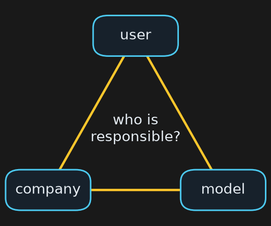
💬 Who should be responsible when an AI agent causes harm: the user, the company, or the model?